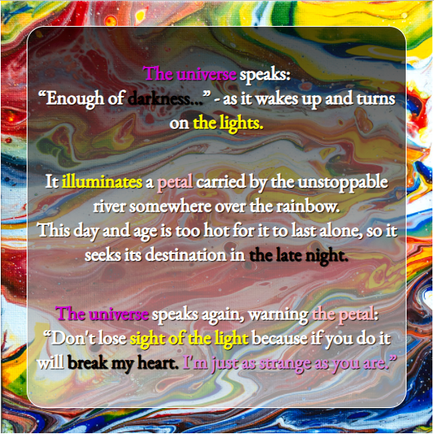

Hunger and Strife
Layered percussion, ominous ambiance, and unforgiving hard drums provide the perfect club workout.
Listen to "Hunger and Strife" by DJ 3maj:
Your browser does not support the audio element.
Tracklist:
Nic As Well - MorcegoSyn – ColdTension - Trialsovid - DustbringerOzwald - Sex DrumOzwald - PreyOzwald - FaustNKC - BTD150Dreem Tran's - ImunneNoire - Rage Riddimovid - Pressure PlateDoubt - EMDRMM - Terrible MuscleDoubt - HD ToolDJ JM - SorrisoMM - Constricted
Luton - I Don't Know, Sweetheart ( DJ 3maj Remix )
Listen on bandcamp , soundcloud or youtube .
Invitation For A Revelation
A story made from song titles.

Listen to "Invitation For A Revelation" by DJ 3maj:
Your browser does not support the audio element.
Tracklist:
The Universe Wakes Up by The Comet Is Coming
Turn The Light On by Julia Holter
Enough by Kelela
Petal by Raveena
Somewhere Over The Rainbow Cover by Tommy Emmanuel
Unstoppable by Lianne LaHavas ( Acoustic Version )
River by Leon Bridges ( Acoustic Version )
To Be Alone by Hozier
River Take Me by Darrell Scott
Destination by Nickel Creek
Day And Age by Julian Lage
Too Hot To Last by Snarky Puppy feat. Lucy Woodward
Late Nights & Heartbreak by Hannah Williams & The Affirmations
Just As Strange by Tedeschi Trucks Band
Don't Lose Sight by Lawrence ( Acoustic Version )
For the girls that go to The University of Applied Arts
Inspired by the good time I had on a boat under a glowing bridge in Belgrade.
Listen to "For the girls that go to The University of Applied Arts" by DJ 3maj:
Your browser does not support the audio element.
Fabulous Future Funk Freakout
Inspired by Daft Punk's Discovery and Homework albums.
Listen to "Fabulous Future Funk Freakout" by DJ 3maj:
Your browser does not support the audio element.
Tracklist:
Vanilla - SuedeShadley Peterson - CowabungaShadley Peterson - Dolphins On MollyShadley Peterson - ParadizeCape Coral - Better WaysDoktor Plekter - BitterSyncShadley Peterson - Marcus Funkee ( w/ Luminessence )Risonam - Fake PerfumeDoktor Plekter - Kraftfullev.exi - RememberTendencies - Footsteps ( w/ Supersex420 )Tendencies - Small CloneProux - VHS Lovingacidente - Gotta Go Crazyacidente - VibratoFlamingosis x Tendencies - Hidden CrushProux - Funk ExpressAritus - Summer With YouSoliterre - Up To YouコンシャスTHOUGHTS - I Miss YouSeason - Move meYuni Wa - 7 Wavesev.exi - TransitionProux - SullivanDaft Punk - Crescendolls
Awesome illustration was done by Denise Rashidi .
Waking Up
This is the music I play to start my day. Good vibes and gradual build-up of energy. Enjoy!
Listen to "Waking Up" by DJ 3maj:
Your browser does not support the audio element.
Tracklist:
Everybody Loves The Sunshine [feat. José James] by Takuya Kuroda
Morning Walk by Brian Culbertson
Ljubav što smo stvorili by irieFM
Retold by Nate Smith
People by Experience Unlimited
By The Time I Get To Phoenix by The Vast Majority
ABC by The Jacksons
Move That Body by CHANCE デラソウル
Want Ads by Soda Machine
It's Your Thing by The Isley Brothers
Soul Sister by Heatwave
Superstition by Stevie Wonder
Shining Star by Earth, Wind & Fire
I Want To Take You Higher by Sly & The Family Stone
Sing a Simple Song by Sly & The Family Stone
Hali Gali
“HALI GALI is a personal approach to the scene, a response to a stalemate, a non-existent space, and infrastructure that everyone complains about. It is a forest fire that is spreading uncontrollably and showing the middle finger to all who hate. A crazy ride of diversity that annoys your neighbors. HALI GALI is a fair of art and energy that we live.”
Listen to "Hali Gali" by DJ 3maj:
Your browser does not support the audio element.
New alternative in Belgrade:
Checkout Hali Gali mockumentary and compilation .
Beyond space, time and scale
Experimental mix recorded live that tries to place our humanity in this mysterious cosmos.
Listen to Beyond space, time and scale; Without origin, destination and ending by DJ 3maj:
Your browser does not support the audio element.
Samples used:
Interstellar - Do Not Go Gentle Into That Good Night
Ruby My Dear - Mezzotinto
Ant-Man Movie - Ant-man Goes To The Quantum Realm
Qebrµs - ⊶⊚⊖⬚⊟⊑∷༜⊚༜∷⊒⊞⬚⊖⊚⊷
Jacob Collier - Clarity
Doctor Strange Movie - Open your eye
Amon Tobin - Journeyman
The Matrix Movie - Neo Wakes Up In the Real World
Filmmaker - Bot Cells
Area 51 Phone call on a radio show
Noisia - Collider
Annihilation movie - The Alien
Tron Legacy - Rectifier
War of the Worlds - The Eve of The War
Alien Isolation Game - Enter the Nest
Interstellar - Landing in the Tesseract scene
Roisin Murphy - Simulation
Amon Tobin - Red Moon
Tim Hecker - Stab Variation
Interstellar - The Wormhole
Sergej Rachmaninoff - Prelude In G minor (Transcription by G.H. Federlein )
Carl Sagan - Pale Blue Dot
Gustav Holst - Neptune
Voyager Golden Record - Greetings From Earth
Tim Hecker - Radiance
Glowing Ambition
Listen to "Glowing Ambition" by DJ 3maj:
Your browser does not support the audio element.
Tracklist:
Mister Magic - Grover Washington
Mr. Magic ( Through The Smoke ) - Amy Winehouse
Nautilus - Bob James
Too High - Stevie Wonder
It's All Imagination - Experience Unlimited
I Believe in Miracles - The Jackson Sisters
Movin' in the Right Direction - Steve Parks
To Prove My Love - Ned Doheny
Getaway - Earth, Wind & Fire
Good Times - Chic
Blame It on the Boogie - The Jacksons
Number One ( Instrumental ) - Patrice Rushen
Clouds - Chaka Khan
Running Away - Roy Ayers
Do I Do - Stevie Wonder
Boogie Nights - Heatwave
Could Heaven Ever Be Like This - Idris Muhammad
Life On Mars - Dexter Wansel
Hooked Up - Jamiroquai
Glide - Pleasure
Funk Power
Listen to "Funk Power" by DJ 3maj:
Your browser does not support the audio element.
Tracklist:
Let's Start ( Fela Kuti Cover ) by Jungle Fire
Sorcerer by Big Band Katowice
Give Me Your Love by Third Coast Kings
Papa Don't Take No Mess by James Brown
Soul Power by Maceo And The Macks
Strike by Orgone
Jungle Boogie by Kool & The Gang
Fencewalk by Mandrill
Malik by Lafayette Afro-Rock Band
Soul Dynamite by The Sound Stylistics
The Seduction by AIFF
Jeannie's Get Down by The Sure Fire Soul Ensemble
Squib Cakes by Tower Of Fire
I Need Some Money by Eddie Harris
My Man Is A Mean Man by Sharon Jones And The Dap-Kings
Silverdome by Lettuce
Hit It And Quit It by Funkadelic
Are you dancing yet?
Listen to "Are you dancing yet?" by DJ 3maj:
Your browser does not support the audio element.
Tracklist:
It's Just Begun by The Jimmy Castor Bunch
Give It Up Turn It Loose ( The Reflex Edit ) by James Brown
Noko Hewon by Afla Sackey & Afrik Bawantu
Let's Start The Dance by Hamilton Bohannon
High on Your Love Suite: One Mo Hit (Of Your Love) by Rick James
Dancing Into Starts by Logg
Jealousy by Martin Solveig
Foot Stompin Music by Bohannon
Git It All by Mandrill
I'm Satisfied ( Underdog Edit ) by James Brown
Jive Man by Exit 9
Pocket Change by Lettuce
Let Me by Santana